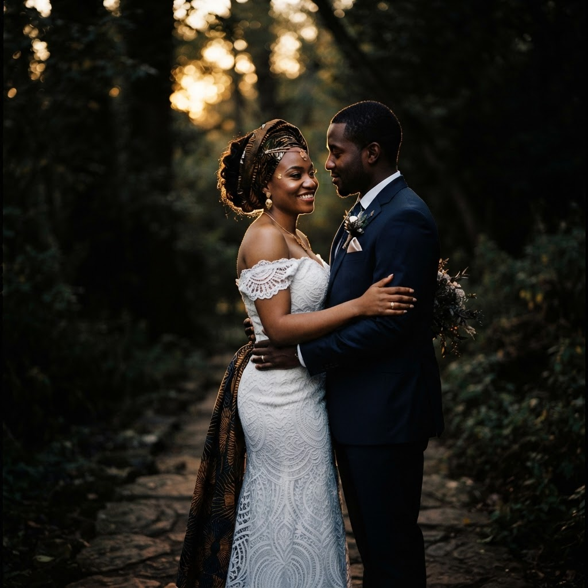
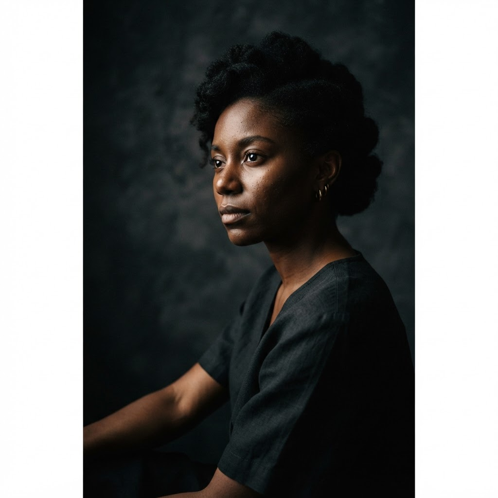
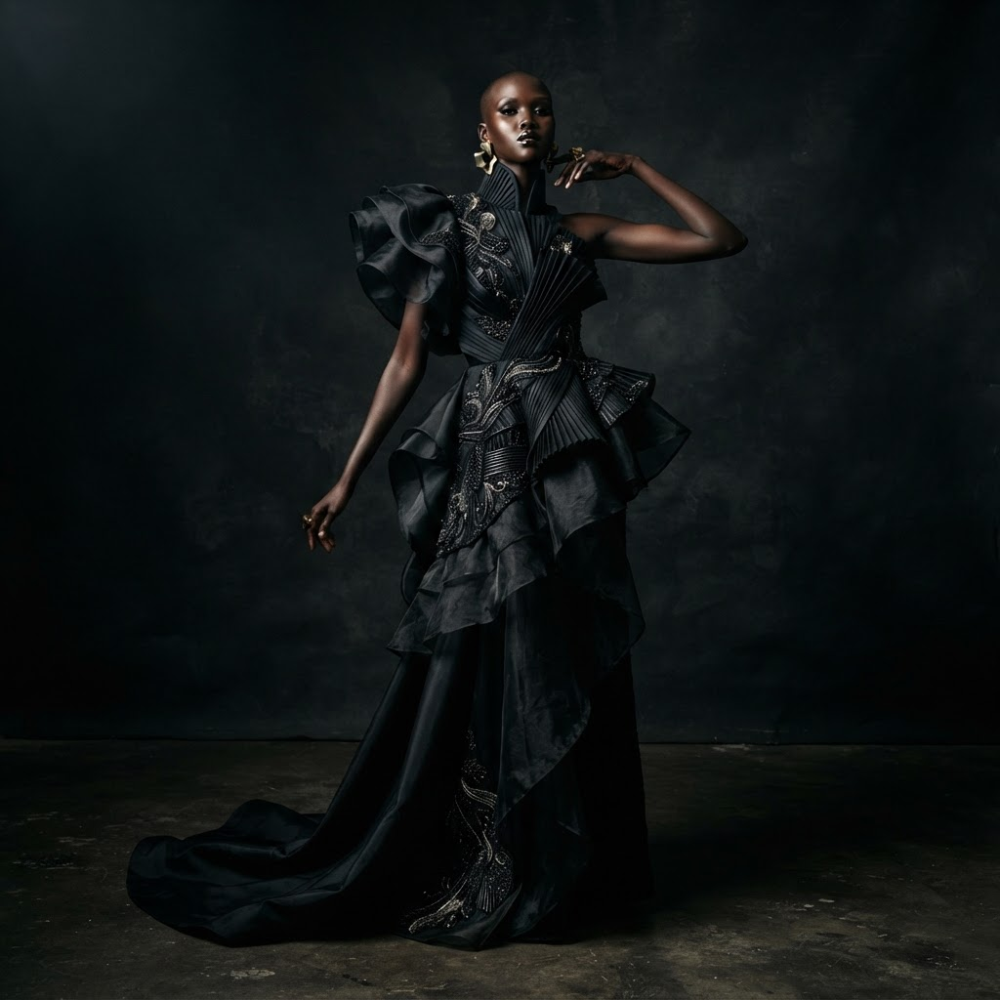
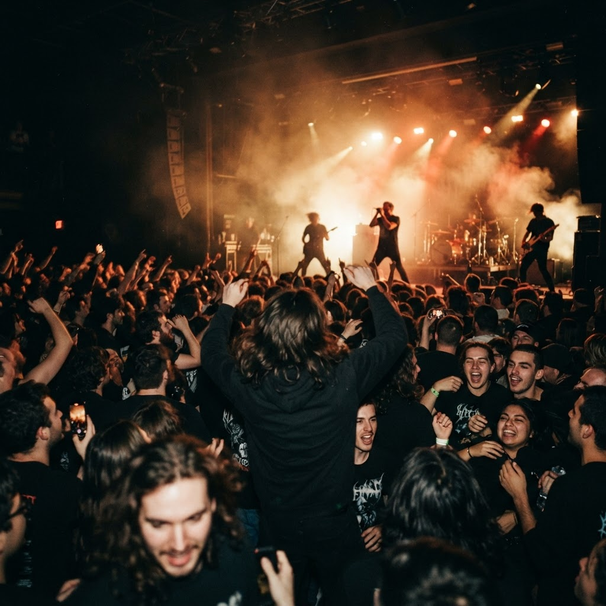
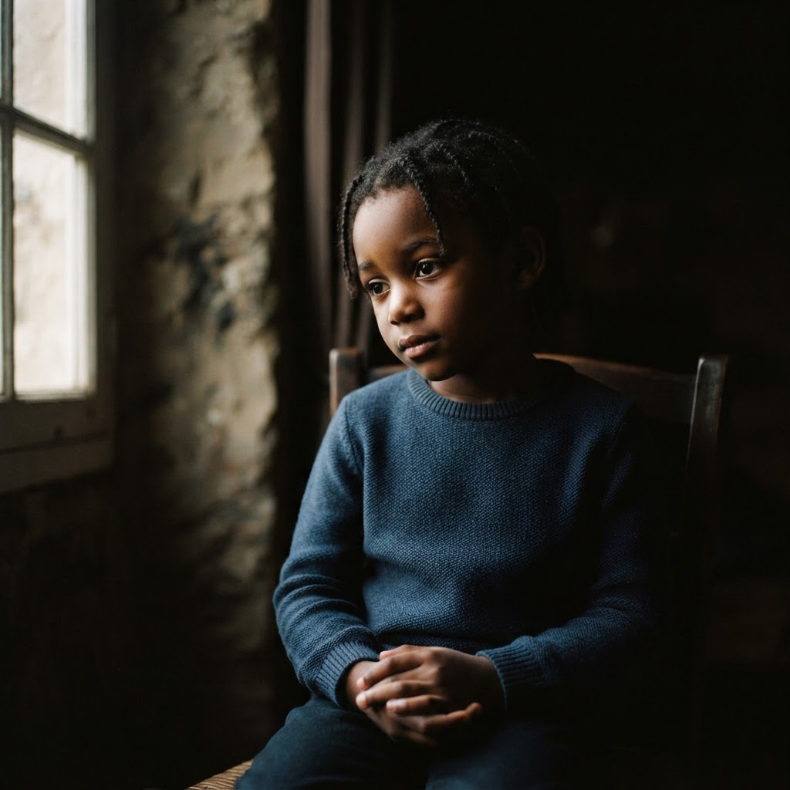

Kinshasa · RDC
Photography
« Photographier, c'est mettre sur la même ligne de mire la tête, l'œil et le cœur. » — HENRI CARTIER-BRESSON
PortfolioDéfiler
01 — Sélection
Mariages, portraits, mode et événements. Chaque image raconte une histoire vraie, capturée à l'instant juste.





02 — Prestations
I.
Reportage complet de votre journée, des préparatifs à la fête. Livraison en galerie privée et album premium.
Réserver →II.
Studio ou lumière naturelle. Portraits corporate, artistiques ou familiaux, retouches soignées.
Réserver →III.
Éditoriaux, lookbooks et campagnes. Direction visuelle et stylisme lumière adaptés à votre marque.
Réserver →IV.
Concerts, galas, conférences et cérémonies. Une couverture discrète et énergique.
Réserver →03 — L'œil
Depuis plus de huit ans, Sypherlight parcourt Kinshasa et la RDC à la recherche de la lumière juste. Mon approche : rester discret, respecter l'instant, et livrer des images qui durent. Du reportage de mariage au portrait d'art, chaque projet est traité avec le même soin.
04 — Réserver
Disponible pour vos mariages, séjours photo et événements à Kinshasa et partout en RDC.
Réserver une séancecontact@sypherlight.com · +243 814 608 505 · Kinshasa, RDC